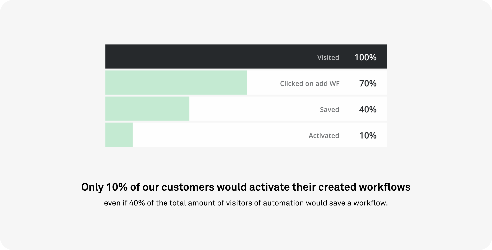

Workflow Automation Templates
The team
On this project were consistently working 1 product manager, 1 product researcher, 1 data analyst and 3-5 backend and frontend developers.
My role
I worked as a product designer for this project, being involved in it since its ideation phase. I worked together with the researcher and the PM to define flows, sketch early mockups and interview users. I prototyped solutions and performed usability tests with internal and external users and had the development team involved throughout the whole design process, which was key in having their feedback and contribution as early as possible, as well as an edge on the development process.
Problem
Workflow automation allows users to build sequences to perform repetitive tasks which are part of their usual workflows. It is a complex feature that, when correctly used, can help users save time and focus on closing deals. Despite its potential benefits, the fear of doing something wrong when setting up automated workflows pushed users to do one of two things: (1) visit the feature and never go back; and (2) set up an automated workflow without actually running/activating it. Our goal was thus to empower the user in building workflows, removing the friction of setting up a complicated workflow structure, while promoting trust in the automated sequence created, hence contributing to the user’s autonomy in using the feature.
Results
With the implementation of Workflow Automation templates feature usage increased by ~30% in the first three months. We reached some important findings along the way such as improving Workflow Automation’s discoverability; making the automation canvas a more intuitive solution; as well as take power users’ needs of tailoring into consideration.

WA Templates
As a result of the Design Sprint our solution focused on providing a template list that would target common use cases. A specific action could then be the trigger to some of the most perfomed use cases in Pipedrive:
Add an activity
Send an email
Add a deal
Move a deal to a specific stage
To help the user set up the template quickly and with the least friction, we focused on having a wizard mapping the way. By dividing mandatory data input by sections we allowed the user to focus on a section at a time, avoiding overwhelming situations. By doing this we were pushing the user forward, giving back small hints that we was doing the right thing.
We didn't do this:
Another need we were trying to cover was to start getting the user familiar with the canvas view, where the workflow structure would appear. In order to achieve this we added to the wizard a map of the workflow skeleton, as a preview. During testing we found out the additional information was actually adding an extra layer of complexity which was just confusing people.
We tried to provide the user with a different set of categories in the sidebar, specifically targetting common salesperson’s goals, instead of general actions to guide the user in discovering the most adequate template for a specific need. From Pipeline management and Lead nurturing through to Admin processes, that change only made the whole categorization unclear and proved that sticking to the simple actions was a better solution. We opted to focus on the action being taken.
Test & Iterate
Interestingly, even if users did understand that automation would help them focus on their business, save time and ultimately money, templates alone were not helping users understand how they could incorporate them into their own processes and existing workflows. This was a matter out of the scope of this project, but we considered important to provide as much as a quick introduction to it. In order to do that we added a “Get started” category, in which users would be presented with specific use cases that could inspire some of their own.
During testing we also found out:
We were struggling with feature discovery, specially considering a solid product where new features and updates struggle to get to the user’s attention.
People would like to test automations in order to be 100% sure that they wouldn’t be doing something wrong.
More proficient users found the canvas to be limiting, not really tackling their needs, so they took advantage of the filtering system to create more options targeted to their specific needs.
Users would frequently mention the need to share a workflow with team members, or manage permissions for editing and activating.
What's next?
Even though our success metrics were reached whithin the expected timeframe, we identified some important action points to keep in mind for future reference.
Future development
Improve discoverability in context, providing users with a prompt to the usage of automation when some specific behaviour is somehow tracked as a repetition that can be automated. In this scenario it would be more clear how automation could help the user save time in a more straightforward way.
Add an Automation course module to Pipedrive’s Academy course list, so users can be even more confident about how the feature might work and impact their personal workflows.
Improve filtering in the Pipeline view to allow users to clearly understand that adding filters to a specific view will enable more actions in the automation workflows.
Potentially add an option to run tests to a specific worfklow.
Users would benefit from a solution focused for teams, where permission management could be an option.
The design sprint
To address this issue we started by scheduling a 5-day design sprint based on Google Venture's book by Jake Knapp, entitled Sprint. We gathered a small group of 3 developers, 2 designers, 1 researcher and 1 product manager and occasionally invited sales representatives.
Day 1
We kicked the week off with an overview of what we want to achieve each day. It is crucial that we keep the plan by the end of each day, because our end-goal is to test a working prototype on Friday to collect feedback and start a mission as soon as possible. The plan is to write down our assumptions regarding Workflow Automation and define our long-term goal, after which we add our How Might We notes to the wall so we can actually define the end target we are going to focus on. Oh and at the same time a few interviews are being done by our amazing researcher, so we have our personas ready to help keep us on track.
Day 2
With an idea in mind of what we want to tackle, it is time to do some benchmarking and start thinking about possible solutions. Let's diverge! We sit, we grab interesting examples and we present them to each other. It is very cool to have developers involved in the whole process I might say!
Day 3
Have an idea? Let's put it down! Time to converge and show everyone what our thoughts are. We grabbed post-its and Sharpies and put our ideas in gallery view to later explain them to everyone and start the voting process on the ones we thought might be the most valuable. This is particularly useful to have uncommon thoughts see the light of day and influence the duller ones. Then the hard part begins, when we hit the board to try to make use of what our lovely minds came up with, trying to answer the problem we identified the day before, in the specific parts that were mapped as those that needed more attention.

Day 4
This is prototype day! After deciding on a flow we were all comfortable with and that respected our northern star goal, the day has finally come to put them into a hi-fi prototype (as much as possible). While designers were mainly busy with putting the prototype together, the rest was busy working on a script and preparing the usability testing for the next day.
We focused mainly on (1) providing pre-made templates for the most used automations within Pipedrive, which would consequently jumpstart the use of a hard to learn feature (based on the result of client surveys); (2) we focused also on building a workflow creation wizard, which purpose would be to guide the user along the way and allow for a reduced amount of customization as well as to make each step of the way as transparent as possible, to increase trust.
Here are the 2 main screens that reflect our learnings up until this point:

Day 5
It's Friyay! And we are ready to test the result of these 4 days of deep dive into workflow automation! The prototype will be useful to understand if we are on the right track and answer questions like: will our users value templates? or will template usage trigger the usage of automation as a feature?. So it's time to take notes, ask questions and analyse the results of our design sprint week. Are we ready to use what we have come up with as the basis of our next mission?
Ideated, prototyped and tested! Let's build it!
A usability journey
The basic and first prototype we came up with during the design sprint along with the results and findings we gathered from testing it on friday, will lead the way into the Mission ahead. Changes are incorporated and, for the next 2 months, the focus will be on building a consistent solution and have it tested internally and externally to make sure the changes made are what we are looking for.
Our initial prototype had some problems that we immediately identified during user testing, but it was useful to make sure we would definitely explore templates and the use of a creation wizard. On the down side? We had a lot to improve regarding onboarding and preparation before landing in the unruly area of the canvas.
Templates should make users' life easier by allowing to pick a premade workflow, but on version 1 it wasn't completely clear what would trigger the actions and what they would actually be. Also, the idea of making it more transparent and user friendly wasn't quite coming along from there. Along the way we decided to illustrate what the templates would do, which proved much better in terms of both user understanding and engagement.

Even if some core ideas remained — visual representation of the expected workflow, representation of the value provided to the user, the immediate readability of the workflow alone and the filtration through a sidebar — there was an evolution towards a more visually appealing solution, mainly to make it as friendly as possible and hopefully bring back the customers that the automation feature was scaring away.
The workflow creation wizard was a challenge in itself. We did want to both introduce the concept of triggers, actions and conditions to users who are less familiar with using the canvas, as well as to help map the idea of consequence and timeline at the same time. Finally we decided to focus on the idea of a unique timeline and ditched the skeleton of the canvas next to the blocks of triggers and actions, since after testing with users it proved to be mostly a distraction rather than an added value to explain the process.